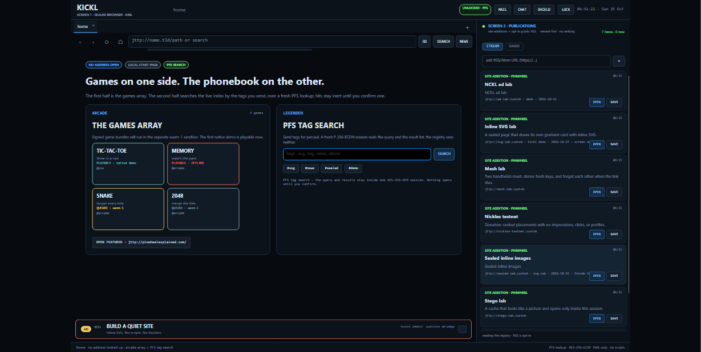

Sealed documents
Pages are KML packages, not HTML bundles. Structure is public; notes, files and keys are blobs under AES-256-GCM.
no scripts · no trackers
v0.1 · vertical slice · 171 tests green
KICKL is a desktop browser for its own namespace. Names resolve through an encrypted phonebook, pages arrive as sealed documents, and not one byte of page script is allowed on the surface — because the format has no instruction for it.

What it does
Every surface in the app is built on the same primitives: a name, a sealed package, and a key that never leaves memory. That is why the parts fit together.
Pages are KML packages, not HTML bundles. Structure is public; notes, files and keys are blobs under AES-256-GCM.
no scripts · no trackers
A lookup is a fresh P-256 ECDH session; the query and the reply travel inside AES-256-GCM, then the session keys are wiped.
PFS phonebook
Letters travel to a short id, sealed end to end. The vault unlocks with a separate mail key and re-locks on a timer.
sealed letters
A group secret wrapped in ML-KEM-1024, per-epoch keys, messages sent as PNGs. The relay carries ciphertext it cannot read.
post-quantum room
Nickles placements are minted for one site and one slot, resolved locally, and rotate in ten-minute buckets. No impression ping.
own the placement
Tic-tac-toe and Memory play natively, offline. Titles are claimed with an RSA-3072 dongle challenge, not a password reset.
playable today
Under the hood
One symmetric cipher does every job, so there is one nonce discipline, one tag check, and one implementation to audit. Asymmetric keys only wrap or agree — they never hold your content.
AES-256-GCM seals blobs, cache entries, keystrokes, transport frames and title tokens.
RSA-3072-OAEP wraps a fresh AES key for an origin device; P-256 ECDH + HKDF splits lookup keys.
Registry snapshots carry Ed25519 and ML-DSA-65 signatures over the same message. No classical-only fallback.
A package that misses the registry hash is never parsed. The mismatch bumps an attack counter instead.
<?xml version="1.0" encoding="utf-8"?>
<kml v="1" site="pinwheelexplained.com">
<head>
<title>Pinwheel, explained</title>
<meta name="tags" content="privacy, sealed-pages"/>
</head>
<body>
<h1>Pinwheel, explained</h1>
<p>Plain structure. No scripts, ever.</p>
<!-- ciphertext until the session key opens it -->
<blob id="b1" mime="text/plain"/>
</body>
</kml>The pinwheel
The registry is the hub: a signed phonebook that maps a name to a package and to the device that serves it. Everything else hangs off that one answer.
The central server
One host runs the whole spine: the signed phonebook the browser resolves names against, the FreeChat room your messages pass through, and the publisher console that mints ad placements. The server stores ciphertext for mail and chat; only the phonebook and public story metadata are readable.
secupgrade.com
LIVE
/Home page · registry news feed
↗
/apicallsRegistry API · signed snapshots
↗
/pinwheel-freechatEncrypted room · server relays opaque PNGs
↗
/adnetworking/publisherNickles console · site-bound placements
↗
The browser pins the registry key and verifies every snapshot twice — Ed25519 and ML-DSA-65 over the same bytes.
Sealed pages
The renderer speaks one small markup language and nothing else. That is the whole security model of the surface — there is no capability to disable, because there is no capability to call.
Take it for a spin
It is a research vertical slice, not a finished browser — but the spine is real: a name resolves, a sealed package verifies, a PIN unlocks, and a blob opens only inside an unlocked session.
f242725e576b06430f7653f602b9d5f8d4d9c5517ef5304a30270cb1a88640db
4eaf4afefb05d50758c6283a89b114a5990cde3ff5fd82678b58b15f46245457
Double-click the .exe. Create a local profile with your own 8+ character key, then sign in. There is no key reset — lose the key, lose the profile.
The build is unsigned, so Windows may say "unknown publisher". Choose More info → Run anyway, or verify the SHA-256 above first.
Unzip, then run run.bat — it builds Release and launches the browser. Or dotnet build Kickl.slnx if you want the CLI and tests too.
Registry, chat and the publisher console are hosted at secupgrade.com — that is the home page the browser resolves against.